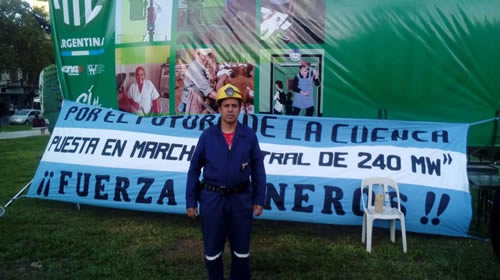

Real Chubut - Agencia de Noticias


Miguel Páez, secretario general ATE-Río Turbio a IB24: “Venimos hasta acá a nacionalizar nuestra lucha contra los despidos en la mina”

En el marco de la “Semana de Acampe en el Congreso por el Trabajo y contra el Ajuste”, que llevan adelante trabajadores de Yacimientos Carboníferos Río Turbio (YCRT) y del INTI -todos enrolados en ATE-Nacional-, Miguel Páez, secretario general de ATE-Río Turbio, dialogó con InfoBaires24, y explicó en detalle la dramática situación que atraviesan los trabajadores mineros, que en los últimos meses sufrieron más de 500 despidos.
-¿Cómo describís la situación que atraviesan en estos momentos en la mina?
La verdad que muy preocupante, debido a las políticas ejercidas por este gobierno que lleva adelante todo un plan de ajuste en nuestra empresa, como también lo hace a lo largo y ancho de todo el país afectando duramente a nuestras comunidades. En nuestro caso, nuestra principal fuente de trabajo en nuestro Yacimiento, y además el gobierno lleva adelante todo un plan sistemático para demonizar el yacimiento y a sus trabajadores mineros y poder paralizar así esta obra emblemática por la que han luchado por generaciones nuestras comunidades de trabajadores mineros para poder darle valor agregado al carbón, aportando energía para el país desde esta usina de 240 mega que fue paralizada por este gobierno, faltando un 30 por ciento de finalización de obra, y por eso lo que estamos llevando ahora es el reclamo de más de 60 días por la reincorporación de más de 500 compañeros despedidos, afectando a miles y miles de familias, y por eso es que venimos hasta acá para nacionalizar esta lucha que lleva más de 60 días.
-¿Cuál es el plan que tiene el gobierno con la mina, cerra la mina?
Por lo que creemos nosotros, sí…porque han bajado la dotación desde que asumió esta intervención había 2.980 trabajadores aproximadamente, y actualmente con todas estas políticas de ajuste debe haber unos 1.900 trabajadores y además de eso la paralización de toda la obra. Nosotros creemos que esto es una adhesión política para favorecer a algunos grupos concentrados del poder y a empresarios amigos, con esto de querer echar a la basura un proyecto energético que tiene mucha trascendencia para nuestras comunidades, para querer instalar parque eólicos que no generan fuentes de trabajo, y que además favorecen a empresarios amigos.
-¿Cuál es el beneficio que tiene actalmente el Estado en la explotación del carbón?, porque levantar allí un parque eólico es una propuesta productiva completamente diferente a la actual
Tal cual, y dichos por ellos mismos que llevaron adelante una auditoria a través de la SiGeN (Sindicatura General de la Nación N.E) donde manifiestan que nuestra capacidad productiva tal cual está planificada la mina, y con todos los equipamientos que actualmente tenemos, es de un millón a un millón quinientas mil toneladas anuales, la usina de 240 megas, faltando 30 por ciento de finalización de la obra, como te decía, la paralizaron, y tenemos un módulo de 120 megas que ya estuvo generando energía con nuestro carbón y fue paralizado también, y nosotros decimos que: aportando energía con nuestro carbón con esa usina de 240 megas a través del interconectado nacional, no solo diversificando la matriz energética, también aportaríamos y seríamos un paliativo en esta emergencia energética que tiene el Estado Nacional, y generaríamos un ahorro de más de cien millones de dólares al Estado Nacional en importación de combustibles, como el fuel-oil, el gas, y eso es lo que toca los intereses que defienden, como por ejemplo lo hace el actual ministro de Energía y Minería Juan José Aranguren, y es por eso que han paralizado esta obra. Nosotros, aportando los 240 megas, significa el uno por ciento de la matriz energética nacional, y significa darle energía a cuatro provincias.
-Hace poco fue tomada la mina por ustedes y hubo algunos conflictos, ¿que planean seguir haciendo en el mediano plazo?
A nosotros se nos están dando diferentes situaciones que nos complican a la hora de llevar adelante este reclamo, pero de todas maneras seguimos firmes, hemos frenado la militarización de nuestras comunidades, a pesar de que han llevado a la Gendarmería desde diferentes puntos del país y hemos logrado su rechazo e imposibilitado que se instale allí ese grupo de Gendarmería, y hoy también están volviendo con esta instancia de querer llevar adelante diferentes estrategias para imponer por la fuerza el fin del reclamo genuino de los trabajadores, para que en principio aceptemos la rendición incondicional y la baja de nuestro convenio colectivo de trabajo, y aceptemos los despidos.
Fuente: Infobaires24